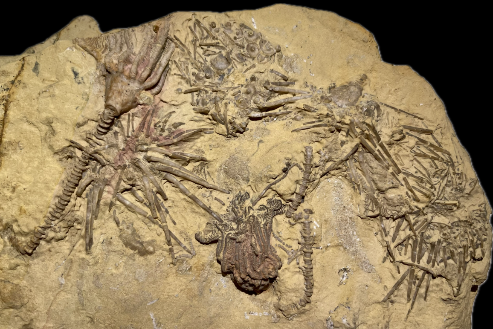
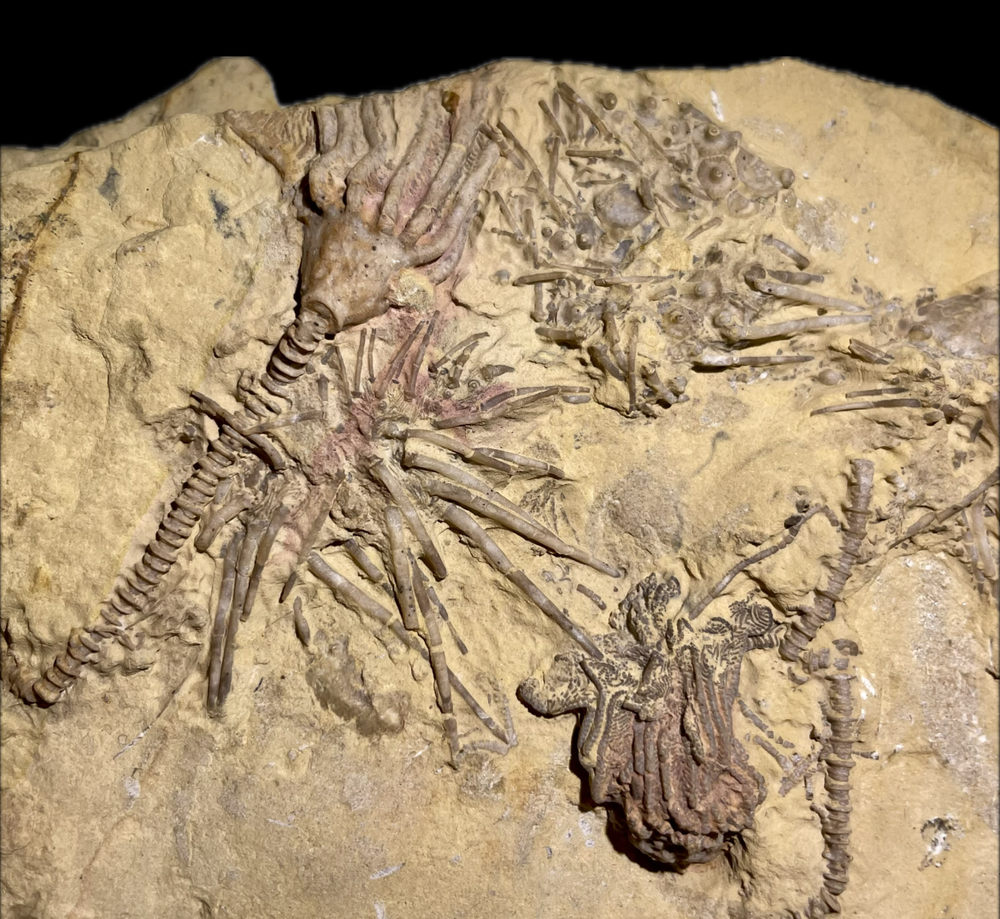
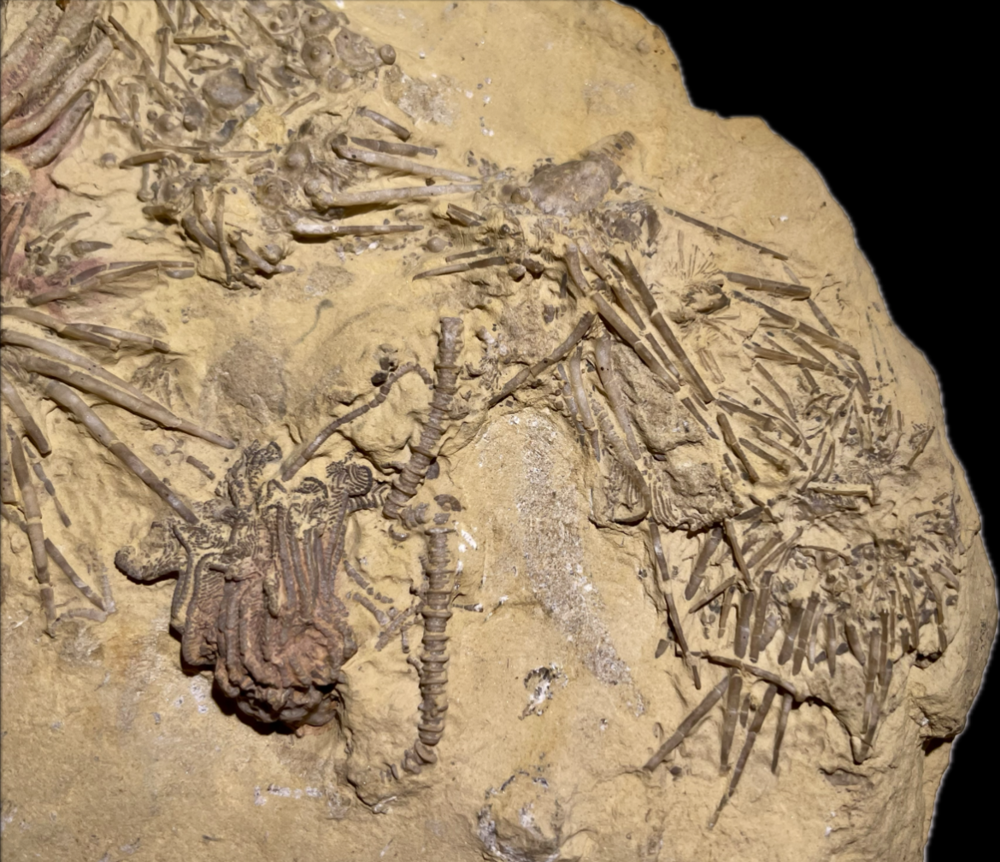
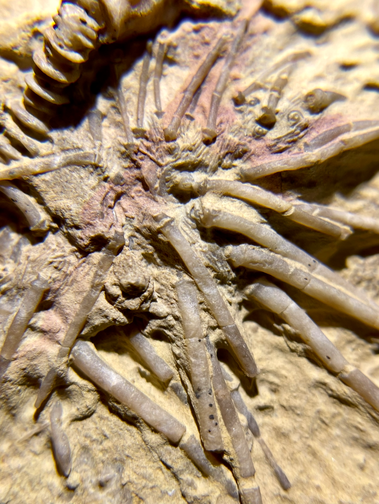
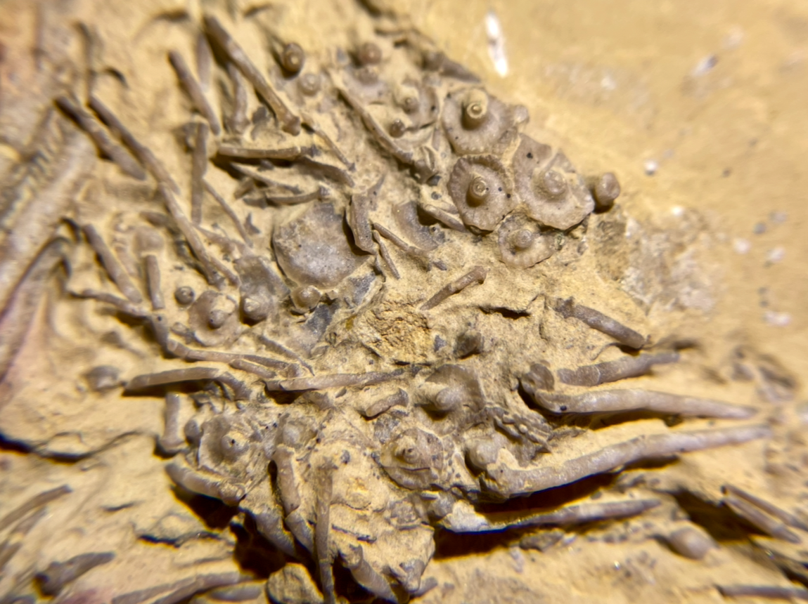
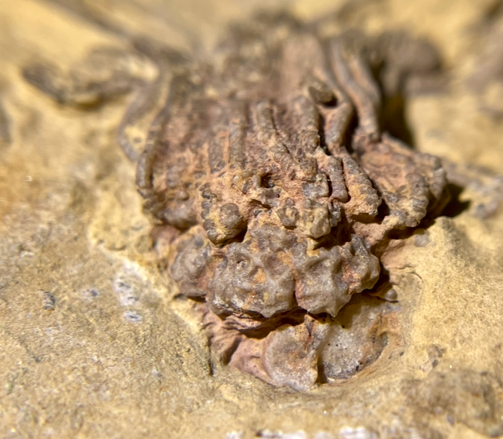
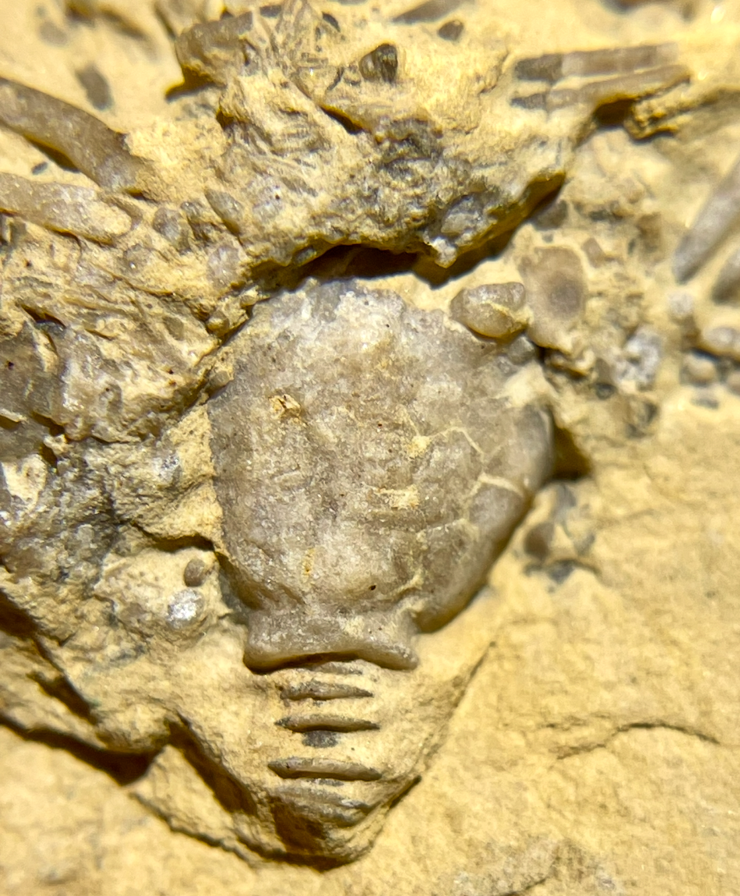

HOME
Echinoid
1. Archaeocidaris sp.
2. Abatocrinus gallatinensis
3. Rhodocrinites douglassi
• Mississippian
• Lodgepole Formation
• Montana, USA
Size: ~4 cm across for each Archaeocidaris
|

|
Copyright © 2024 by Samuel Kim, all rights reserved